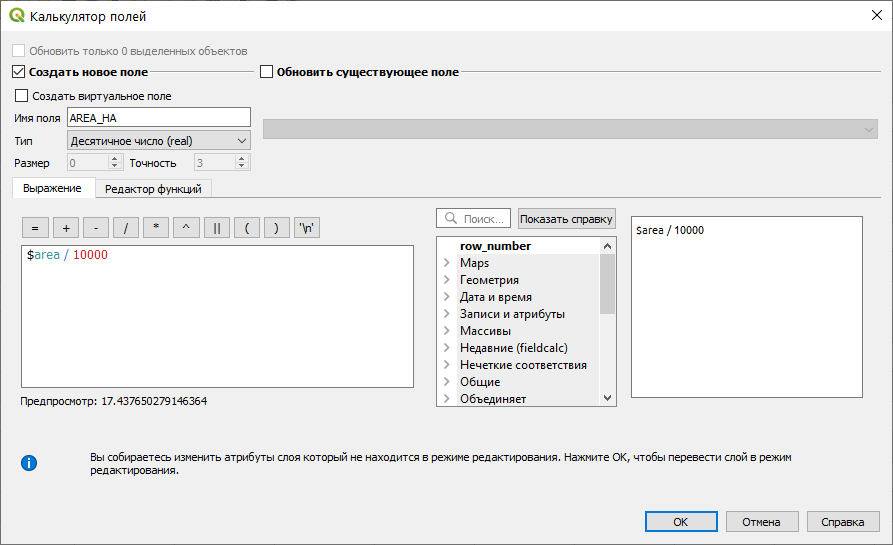

Упражнение 4 Анализ пространственных взаимосвязей
Архив с данными и файлом отчёта
4.1 Введение
Цель задания — научиться определять пространственную приуроченность двух явлений на основе процента взаимного покрытия их площадей (методом оверлея).
Необходимая теоретическая подготовка: Оверлей пространственных объектов, геометрическое определение вероятности как отношения мер (площадей), соединение таблиц в реляционных базах данных, внешний и внутренний ключ соединения.
Необходимая практическая подготовка: Знание основных компонент интерфейса QGIS (менеджер источников данных, таблица слоёв, фрейм карты, менеджер компоновок). Работа с различными форматами источников пространственных данных . Настройка символики и подписей объектов. Владение базовыми ГИС-технологиями.
Исходные данные: База данных ГИС «Сатино».
Результат: Таблица взаимного покрытия площадей типов рельефа и подтипов почв.
4.1.1 Контрольный лист
- Добавить на карту слои типов почв и рельефа, оформить их
- Произвести оверлей слоев
- Произвести слияние данных и соединение таблиц
- Подсчитать процент покрытия площадей
4.1.2 Аннотация
Задание посвящено знакомству с пространственным анализом на основе векторных данных. Векторная модель представляет объекты в виде отдельных геометрических фигур с набором атрибутов. Она является объектно-ориентированной и удобна для анализа формы, размеров объектов, их взаимной конфигурации в пространстве. Одним из широко используемых методов анализа на основе векторных данных является оверлей.
При оверлее происходит наложение двух или более слоев, в результате чего образуется их графическая композиция. Полученные участки наследуют атрибуты от каждого слоя. Эта операция базируется на стандартных отношениях множеств, таких как пересечение, объединение и симметрическая разность.
С помощью оверлея можно, например, установить, к каким генетическим типам рельефа приурочены различные типы и подтипы почв. В общем случае оверлей позволяет установить, какие комбинации объектов встречаются в пространстве. В задании предлагается исследовать методом оверлея взаимосвязь типов рельефа и типов и подтипов почв.
4.2 Визуальный анализ векторных слоев
В первую очередь при анализе данных следует провести их визуальную оценку, которая может натолкнуть на отыскание закономерностей во взаимном расположении объектов.
Распакуйте архив с материалами упражнения в свою рабочую директорию. Создайте проект QGIS в папке с распакованными материалами.
Добавьте на карту слой RelTypes из базы геоданных
Satino.gdb. Примените к нему стиль из файлаRelTypes.qml.
Добавьте на карту слой SoilTypes из той же базы. Изобразите его в виде полигонов без заливки с обводкой красного цвета.

Выберите инструмент идентификации
 и щелкните в пределах карты на любом полигоне. Откроется форма идентификации (отображения) атрибутов объекта
и щелкните в пределах карты на любом полигоне. Откроется форма идентификации (отображения) атрибутов объекта
По умолчанию QGIS идентифицирует объекты либо из самого верхнего слоя (Сверху вниз, до первого найденного, в порядке перечисления в панели слоёв), либо из того слоя, который выбран в панели слоёв (Текущий слой). Можно настроить инструмент идентификации таким образом, чтобы отображать атрибуты объектов из всех доступных слоёв. Для этого в нижней части панели идентификации нужно установить режим Сверху вниз.


Пользуясь инструментом идентификации, проанализируйте совмещенное изображение границ типов почв и рельефа.
Вопрос 1: Есть ли какие-то совпадения или подобия рисунков контуров типов рельефа и подтипов почв в пределах речных долин, междуречий, малых эрозионных форм?
Когда данные исследованы визуально и путем идентификации, можно перейти к их анализу с помощью оверлея.
4.3 Оверлей слоев методом пересечения
Инструменты векторного оверлея, а также некоторые родственные им инструменты в QGIS размещаются в меню «Вектор — Геообработка». Также эти инструменты доступны из панели инструментов анализа.
Изучите, как работают инструменты геообработки. Для этого сохраните и закройте свой проект QGIS, затем создайте новый проект, а в нём — два временных полигональных слоя.
Временный слой в QGIS хранится в выделенной директории среди системных файлов. Если не сохранять временные файлы, они будут удалены после закрытия окна QGIS.
Чтобы создать временный слой, нажмите кнопку Новый временный слой в панели менеджера источников данных. Используйте для создаваемых слоёв проецированную систему координат!
поочерёдно примените к вашим слоям следующие инструменты геообработки: Обрезать (Clip), Разность (Erase), пересечение (Intersect), Симметрическая разность (Symmetrical Difference), Объединение (Union) и ответьте на вопросы:
Вопрос 2: опишите словесно, как будет выглядеть результат применения каждого из инструментов геообработки к произвольной паре наборов данных?
Вопрос 3: какие из изученных инструментов геообработки будут выдавать одинаковый результат независимо от порядка исходных слоёв, а для каких этот результат будет различен? Учитывайте не только геометрические, но и атрибутивные свойства результата.
Вопрос 4: чем отличаются результаты обработки с помощью инструментов Обрезать (Clip) и Пересечение (Intersect)?
Вернитесь в основной рабочий проект.
Запустите инструмент Пересечение (Intersect). Настройте параметры следующим образом:
- Используйте слой
SoilTypesв качестве исходного и слойRelTypesв качестве оверлейного.
- Сохраните выходной набор данных как GeoPackage в вашу рабочую директорию. Назовите выходной файл
%фамилия%_geoprocessing.gpkg, а в открывшемся окне задания имени слоя введитеSoil_Relief_Intersect.

- Используйте слой
Нажмите «Выполнить», чтобы запустить вычисления.
Результат вычислений добавится на карту и в таблицу слоёв под именем
Пересечение.Переименуйте добавленный слой в
Комбинации почвы-рельеф.Поместите полученный оверлеем слой между слоями типов почв и рельефа, и настройте его отображение в виде полигона без заливки с черной обводкой. Там, где границы совпадают с контурами типов рельефа, они будут черного цвета, а там где они совпадают с контурами типов почв, будет красная линия с черной обводкой.

Раскройте атрибутивную таблицу слоя Комбинации почвы-рельеф.
Вопрос 5: Какие поля содержатся в атрибутивной таблице полученного слоя?
4.4 Слияние результатов пересечения с целью получения показателя пространственной связи
Поскольку каждый полигон в оверлейном слое содержит значение типа/подтипа почвы и типа рельефа, появляется возможность установить приуроченность типов и подтипов почв к определенным типам рельефа.
Чтобы подсчитать долю каждого типа рельефа в площади каждого подтипа почв, необходимо просуммировать площади каждой их уникальной комбинации. Например, дерново-карбонатные выщелоченные почвы (Д-в-к) на крутых эрозионных склонах встречаются в пределах Сатинского полигона в виде 6 разрозненных участков, имеющих некоторую суммарную площадь. Эта площадь, деленная на суммарную площадь почв подтипа Д-в-к даст вероятностный критерий приуроченности почв Д-в-к к крутым эрозионным склонам. То же самое касается остальных комбинаций подтипов почв и типов рельефа.
С точки зрения рабочих процессов ГИС, операцию следует разбить на 5 шагов:
подсчет суммарной площади каждой комбинации подтипа почв и типа рельефа;
подсчет суммарной площади каждого подтипа почв;
добавление поля, в которое будет записана процентная доля;
соединение таблиц комбинаций и подтипов почв по названию подтипа почв;
деление площади комбинации на площадь подтипа почв и запись результата в соответствующее поле.
Объединение разрозненных объектов, обладающих одинаковым набором атрибутов, осуществляется с помощью операции объединения по признаку (Dissolve). Причем, если объекты примыкают друг к другу, граница между ними будет стерта, а если объекты разнесены в пространстве, на выходе получится составной объект (Multipart feature), состоящий из нескольких полигонов. Объединение по признаку — это один из методов генерализации, он очень часто используется в геоинформационном анализе и картографировании.
Откройте инструмент геообработки «Объединение по признаку».
Выберите в качестве исходного слоя Комбинации почвы-рельеф.
Нажмите на кнопку с изображением многоточия в строке Dissolve fields (optional), чтобы задать поля, по которым будет производиться слияние. В открывшемся списке отметьте поля SoilType, SoilSubtype и RelType. Тем самым можно будет найти все уникальные комбинации подтипов почв и типов рельефа.
Поле SoilType необходимо отметить для того, чтобы в таблице результирующего слоя сохранилась информация о типах почв. Это не повлияет на сам результат, поскольку количество комбинаций типа и подтипа почв равно количеству самих подтипов.
Укажите путь для сохранения результата объединения по признаку. Сохраните результат в тот же GeoPackage, что и результат пересечения, а слой назовите
Soil_Relief_Intersect_Dissolve.Запустите выполнение инструмента.
После того, как результат появится в таблице содержания, закройте окно инструмента. Переименуйте полученный слой в Слияние комбинаций почвы-рельеф.
Отключите этот слой в таблице содержания.
4.5 Объединение подтипов почв для подсчёта суммарной площади
Запустите инструмент объединения по признаку еще раз.
Выберите в качестве входных данных слой SoilTypes.
В списке полей для объединения выберите поля SoilType и SoilSubtype.
Выходной набор данных сохраните в тот же GeoPackage с именем слоя SoilTypes_Dissolve.
Остальные параметры оставьте по умолчанию и запустите инструмент.
Назовите полученный слой Слияние подтипов почв. В данном слое в результате операции слияния каждый подтип почв будет представлен единственным объектом.
Отключите этот слой в таблице содержания.
4.6 Расчёт площадей объектов
В отличие от ArcGIS, QGIS не умеет автоматически пересчитывать площади объектов при изменении их геометрии. А изменения, которые мы произвели в процессе объединения по признаку, достаточно велики. Далее мы рассчитаем площади каждого объекта в «объединённых» слоях, затем выполним соединение атрибутивных таблиц и рассчитаем показатель связи на основе соотношения площадей.
Откройте таблицу атрибутов слоя Слияние комбинаций почвы-рельеф.
В заголовке таблицы найдите Открыть калькулятор полей (
 ) или нажмите
) или нажмите Ctrl+I.В QGIS, в отличие от ArcGIS и многих СУБД, не требуется отдельно создавать новое поле перед выполнением расчёта. Мы создадим новое поле, в котором будет записана площадь объекта в гектарах, и одновременно заполним его значениями с помощью калькулятора полей.
Введите имя поля
AREA_HA_INTERSECTи установите тип данных «Десятичное число (real)».Введите выражение
$area / 10000в поле «Выражение».
Пояснение:
area()— системная функция QGIS, возвращающая площадь объекта. Значок$означает, что функция будет применена к текущему объекту. Площадь вычисляется в единицах измерения площади, предусмотренных для системы координат источника данных. Для проецированных систем координат это, как правило, метры (реже футы). Назначение выражения/ 10000постарайтесь определить самостоятельно.Нажмите ОК. Слой перейдёт в режим редактирования, а в таблице атрибутов появится новый столбец.
Сохраните правки и выключите режим редактирования для слоя Слияние комбинаций почвы-рельеф. Кнопка включения/выключения режима редактирования доступна не только в панели редактирования, но и в окне таблицы атрибутов.
Проделайте аналогичную операцию для слоя Слияние подтипов почв. Важно: используйте другое имя для поля площади, например,
AREA_HA_SOILS, чтобы избежать ошибки на следующем шаге.
4.7 Соединение таблиц по названию подтипа почв
Для расчета пространственной взаимосвязи необходимо поделить площадь каждой комбинации на площадь соответствующего подтипа почв. Эти площади находятся сейчас в разных таблицах — Слияние подтипов почв и Слияние комбинаций почвы-рельеф. Их можно соединить по полю подтипа почв.
Соединение таблиц (table join) — операция, в результате которой к одной таблице временно добавляются столбцы из другой таблицы. Чтобы установить соответствие между строками исходной и присоединяемой таблицы, необходимо иметь в каждой таблице поле с общими для них значениями. Например, это может быть числовой код объекта или, как в нашем случае, подтип почв (строковый тип данных).
Откройте свойства слоя Слияние комбинаций почвы-рельеф и перейдите на вкладку Связи.
Нажмите на кнопку с изображением знака «+» внизу, чтобы добавить новую связь.
Настройте параметры соединения, как показано на рисунке ниже:

Вопрос 6: Что такое «поле для объединения» и «целевое поле» в QGIS? К каким слоям относится каждое из них?
Примените изменения, закройте свойства слоя и откройте таблицу атрибутов.
Вопрос 7: Что изменилось в таблице атрибутов после создания связи?
4.8 Вычисление результирующих значений показателя связи
Откройте таблицу атрибутов слоя Слияние комбинаций почвы-рельеф, а затем вызовите калькулятор полей.
Укажите, что результат вычисления будет сохраняться в новое поле вещественного (real) типа, имя поля —
PercentВ окне ввода выражения составьте следующее выражение:
Площадь сочетания подтипа почв и типа рельефа / Площадь подтипа почв × 100
Подсказка: чтобы использовать значения полей в выражении, найдите в средней панели группу «Поля и значения». Добавляйте поля в выражение, кликая по их названиям дважды левой кнопкой мыши.
Запустите расчёт. После окончания расчёта посмотрите получившиеся значения в поле Percent.
Удалите соединение таблиц через свойства слоя Слияние комбинаций почвы-рельеф (вкладка «Связи», кнопка с изображением знака «минус» внизу).
Отсортируйте таблицу атрибутов по значению поля Percent по убыванию. Выберите объекты, значение показателя связи для которых превышает 75 %.
Скройте все столбцы, кроме типа почв, подтипа почв, типа рельефа и поля Percent.. Для того, чтобы скрыть столбец в таблице атрибутов, нажмите на его название правой кнопкой мыши и выберите опцию Hide column.
Скомпонуйте окно приложения так, чтобы было видно целиком карту, а также выделенные в таблице строки, а также столбцы, перечисленные в предыдущем пункте.
Скриншот 1: окно карты и результирующая таблица
Примечание: если размер вашего экрана не позволяет скомпоновать окно QGIS в запрошенном виде, сделайте два скриншота: отдельно основное окно QGIS, отдельно таблицу атрибутов.
Сохраните документ карты.